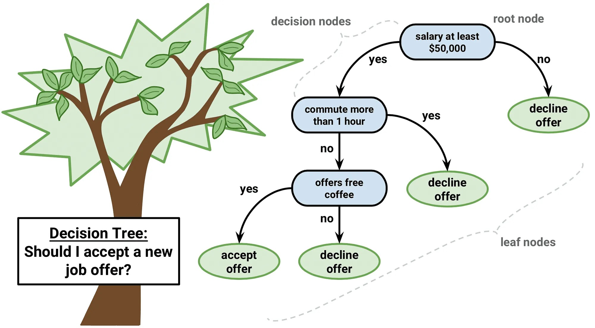
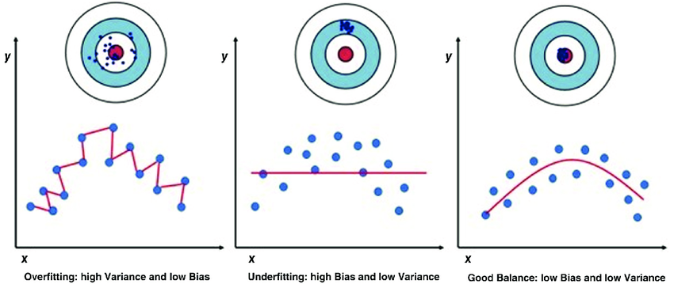

6 Classification
This week, we learnt about the classification, part of machine learning, in remote sensing, which can be used to extract land cover from EO data. We’re teaching computers to learn like us, picking up patterns and insights the way we do, so they can take over some of the learning stuff.
It can really be critical in the field of:
Urban expansion analysis: Classify urban areas from historical data to identify different types of urban expansion.
Environmental monitoring: Detect air pollutants and land surface temperature.
Urban green spaces detection: Combine Earth observation with other datasets, object-based image analysis, land cover indices (e.g., NDVI), and fractional methods.
Illegal logging detection: Google Earth Engine, coupled with high-resolution satellite data (e.g., Sentinel and Landsat)
Fire risk assessment: Create hazard maps that consider various risk factors and their weights.
6.1 Classification and regression trees (CART)
6.1.1 Classificattion trees
Classification trees are used to divide data sets into discrete categories, such as whether weather conditions determine whether it is suitable for golf. Decision trees classify data through a series of questions (nodes), each question branches out according to different answers to the data attributes, until the final classification decision (leaves).
6.1.1.1 Gini impurity
How can we decide which feature to use in splitting the data? This brings us to the concept of Gini impurity.
Gini impurity measures the likelihood of incorrect classification if randomly selected data were labeled according to the distribution in a subset. Lower Gini impurity values mean higher purity levels, making it an essential tool for deciding which features should split the dataset at each node. So we choose least impure data as root node split.
6.1.2 Regression trees
Regression trees are used to predict continuous numerical variables, such as student test scores.
In the regression tree, the optimal split point is determined by minimizing the sum of squared residuals (SSR) after splitting the data. The smaller the sum of squared residuals, the better the model fits the data.
Regression trees vs linear regression
Benefits:
- More flexible and not limited to the assumption that the data is linear;
- Correlated data is allowed
Drawbacks:
- Lack of interpretation
- Not reflect the influence of variables
6.1.3 Fitting problems
- Underfitting: a model is too simple to capture the underlying pattern of the data
- Overfitting: a model is too complex, capturing noise in the data

For machine learning models, we always want to find a balance between the precision of the training data and the good performance of the test data.
Two ways to prevent overfitting:
- Limit the tree grows: setting a maximum depth for the tree or a minimum number of samples in a leaf to split a node;
- Weakest link pruning: remove the least important leaves with the smallest decrease in impurity
6.2 Random forest
Random forests take the concept of decision trees to the ensemble level, combining the predictions of multiple trees to make a final decision. By introducing randomness in both the selection of data points and features for each tree, random forests mitigate the risk of overfitting while preserving the intuitive appeal of decision trees.
6.3 Supervised vs Unsupervised learning
Supervised learning: Involves training the model with labeled data. For instance, by labeling certain pixels as ‘urban’ or ‘grass’, the model learns to classify other pixels based on the training.
- Pattern vector: a pattern vector comprises all the spectral values for a pixel, which the model uses for classification.
- Approaches: include creating a training dataset, developing a signature file based on it, and then classifying the entire image.
Unsupervised learning: not use labeled data. Instead, it automatically classifies the pixels into clusters based on their spectral values. Common algorithms include k-means and ISO data clustering.
- DBscan: utilizes two parameters, distance and minimum points, to determine clusters.
- ISO data clustering: similar to DBscan but allows for iterative refinement of clusters, making it well-suited for Earth observation data.
Which kind of learning to use depends on the availability of labeled data and the specific requirements of the classification task.
6.4 Maximum likelihood
Maximum likelihood classification (MLC) assumes that the spectral signatures of each class in the training data are normally distributed. For each class, it computes the mean and covariance of the spectral bands from the training samples. For a given pixel, MLC calculates the probability of that pixel belonging to each class using the spectral signature’s mean and covariance. The pixel is then classified into the class with the highest probability.
6.5 Support vector machine (SVM)
SVM is a non-parametric machine learning algorithm used for both classification and regression tasks. In the context of remote sensing, SVM is particularly valued for its ability to handle high-dimensional data and its effectiveness in classifying complex datasets. SVM seeks to find a hyperplane in an N-dimensional space (N = number of features) that distinctly classifies the data points into different categories. The optimal hyperplane is the one that has the maximum margin, i.e., the maximum distance between data points of both classes. Data points closest to the hyperplane are called support vectors.
For non-linearly separable data, SVM uses the kernel trick to transform the input space into a higher-dimensional space where a hyperplane can effectively separate the classes.
6.5.1 Key Parameters
C (Cost): Controls the trade-off between having a smooth decision boundary and classifying the training points correctly. A higher C aims for a perfect classification but may lead to overfitting.
Gamma: In kernel functions, gamma defines how far the influence of a single training example reaches. Low values mean ‘far’ and high values mean ‘close’. It affects the smoothness of the boundary.
6.5.2 Benefits and drawbacks
Benefits:
- Effective in high-dimensional spaces;
- Work well with a clear margin of separation and is robust against overfitting.
Drawbacks:
- The choice of the kernel and the tuning of parameters can be complex and require cross-validation for optimal performance;
- Less effective with very large datasets.
6.6 Applications
This week, I focus on the applications of machine learning techniques, specifically Support Vector Machines (SVM), Random Forest (RF), and Classification and Regression Trees (CART), for the classification of remote sensing data.
The exploration begins with SVM, where I focus on comparing its classification accuracy against other methods like Maximum Likelihood (ML) and Artificial Neural Networks (ANN) in remote sensing data analysis. This method proves to be highly effective in high-dimensional spaces, even when the number of dimensions exceeds the number of samples, although it demands careful parameter tuning and kernel selection, which can be computationally intensive for large datasets.
Moving on to Random Forest, I investigate its performance in terms of land cover classification accuracy, training time, and user-defined parameters using Landsat ETM+ data. The RF method stands out for its ability to handle missing values while maintaining accuracy, and for providing estimates of which variables are important in the classification process. However, it can be slow to generate predictions when involving a large number of trees and deep trees, presenting a challenge in terms of computational efficiency.
Lastly, my study incorporates CART, used in conjunction with SVM and RF, for classifying vegetation in the Jodhpur region using Sentinel-2 satellite data. CART offers ease of understanding and interpretation and can handle both numerical and categorical data. Its main drawback, however, is its tendency to overfit, especially with noisy data, which can compromise the accuracy of the classification.
Throughout my research, I notice a recurring theme: the choice among SVM, RF, and CART depends on the specific requirements of the classification task, including the need for model interpretability, computational efficiency, and the capability to handle high-dimensional data or missing values. This comparative analysis not only highlights the unique strengths and suitability of each method for different scenarios but also sheds light on the complexities involved in remote sensing data classification, guiding my future research directions in this field.
6.7 Reflection
This week, diving into how machines can learn to map out our world using satellite images really caught my attention. It’s like teaching a computer to see the Earth the way we do, but it can deal with loads of data faster than any human. Learning about how we can tell a computer to figure out where cities are growing or where forests are being cut down was super interesting and kind of important, especially when thinking about keeping an eye on the environment.